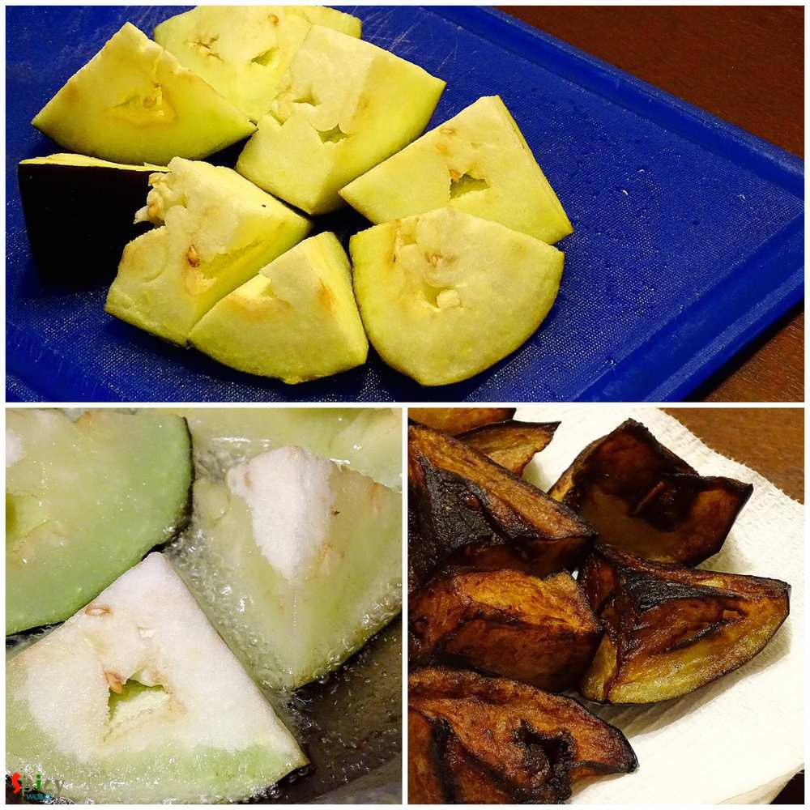
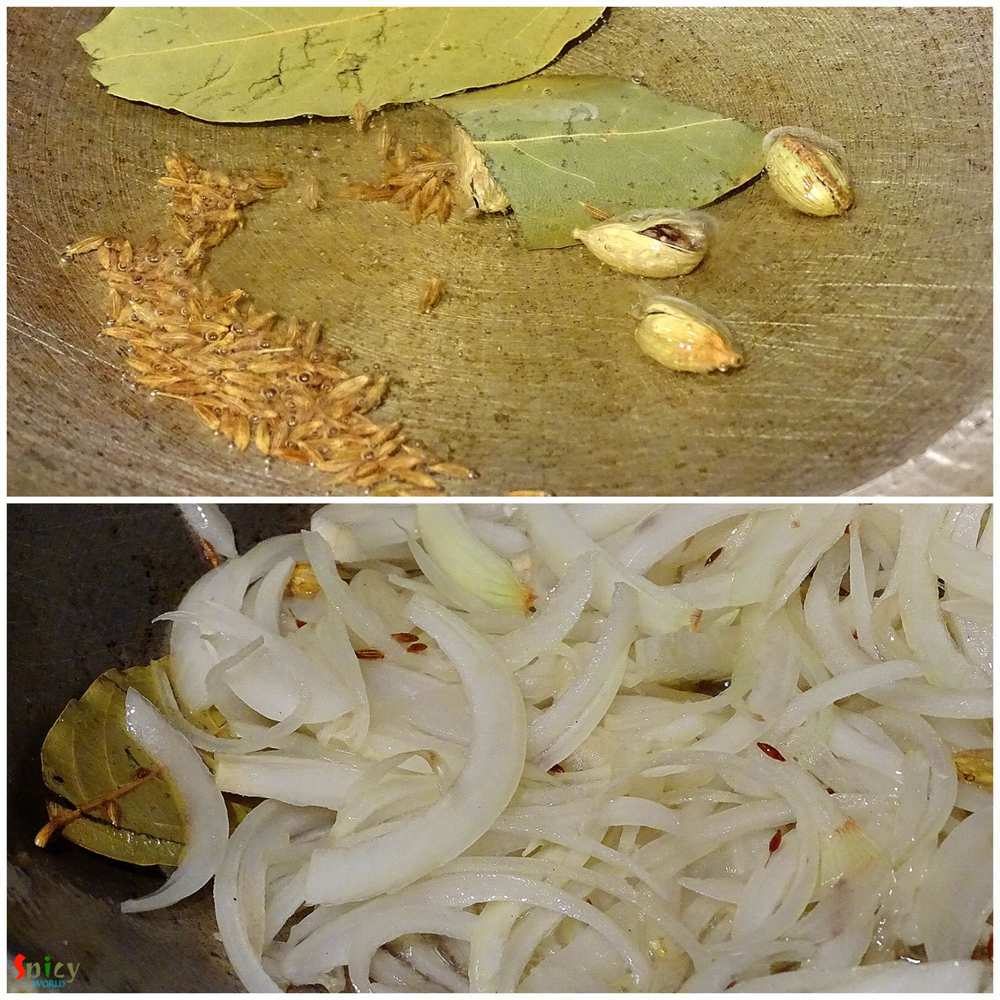
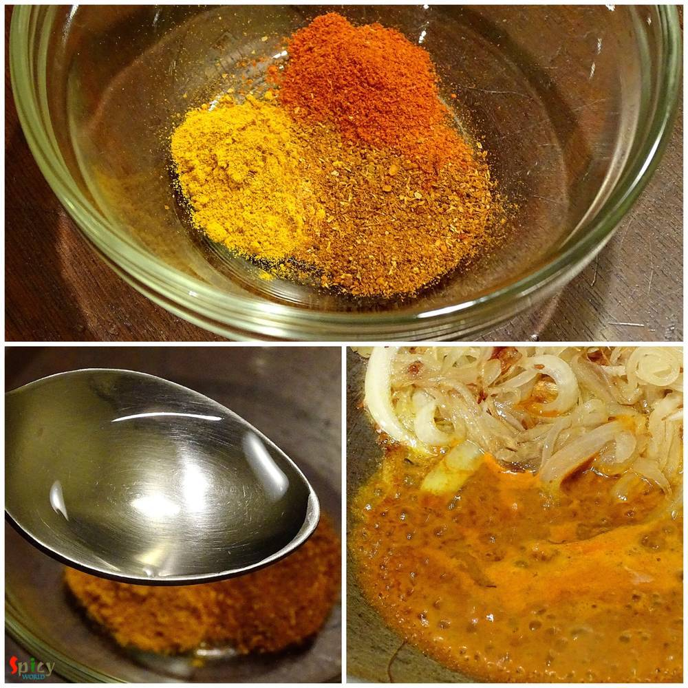
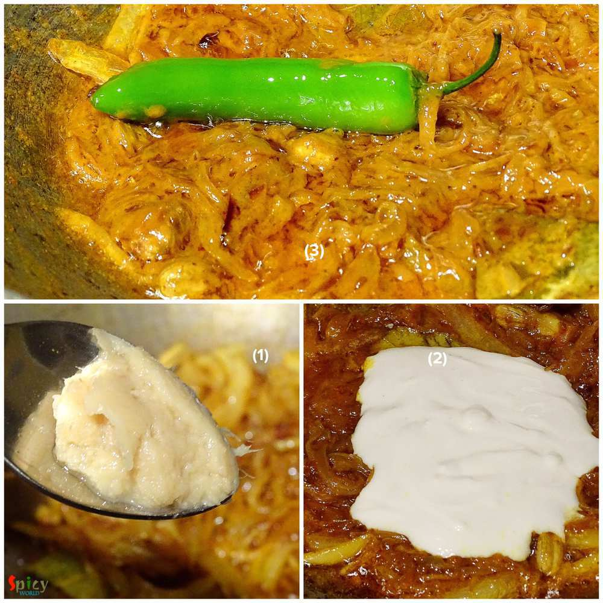
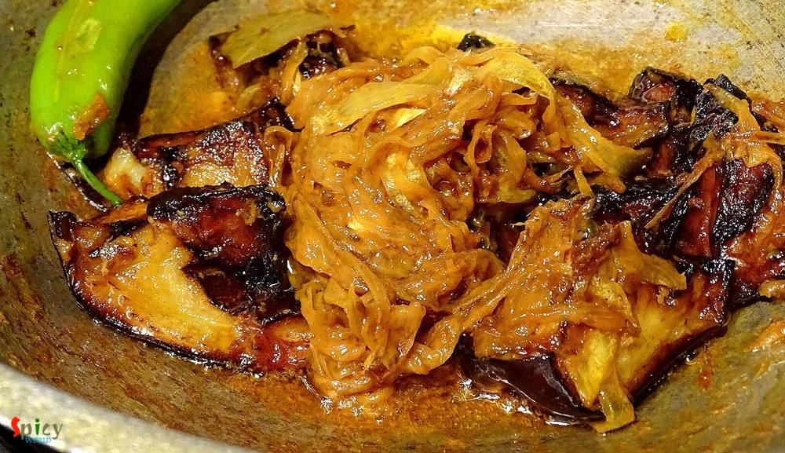
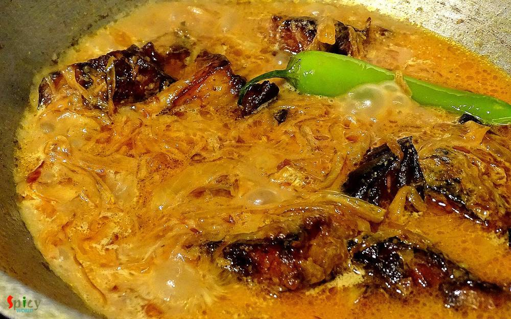

Simple and Easy Recipes
Khatta Baingan (khatta begun)
© 2016 Spicy World, Published on: Nov 15, 2015
'Khatta' means tangy/sour and 'baingan' means eggplant/begun. Most probably this dish is from Kashmiri cuisin. I do not have much knowledge about this cuisin but I can assure you that you will never forget this eggplant recipe. Last wednesday we both wanted to eat veg in dinner and I had an eggplant(begun) in my fridge. So, I googled for some spicy veg recipes made with eggplant, and my eyes got stuck to this one. The recipe is simple and very easy to make. I just made a little change, as 'he' doesn't like tamarind (tetul/imli) in his food, I had to use yogurt instead of it. Believe me the taste came out really delicious. It goes very well with steamed rice or plain roti. Try this in your kitchen and share your story with us.
")
Ingredients
- 8-10 big cubes of eggplant.
- 1 cup thinly sliced onion.
- 1 Teaspoon ginger and garlic paste.
- 1 green chilli.
- Whole spices(1 Teaspoon cumin seeds, 2 bay leaf, 3 green cardamoms).
- Spice powder(1 Teaspoon turmeric powder, 1 Teaspoon red chilli powder, 1 Teaspoon garam masala powder).
- 4-5 Tablespoons of beaten yogurt / curd.
- Salt and sugar.
- Warm water.
- 5 Teaspoons mustard oil.
- White oil for deep fry the eggplant cubes.
")
Steps
Wash the eggplant cubes very well and pat dry.
Deep fry the cubes in white oil till golden brown.
After frying remove them in a paper towel.
Heat mustard oil in a pan.
Add the whole spices in hot oil. Saute it for a minute.
Add the onion slices and pinch of salt. Fry it till golden in color.
Put all the spice powder in a bowl.
Add 3-4 Teaspoons water. Mix it.
When the oil starts separating from onion, add this spice mix water. Mix it in high flame for 2-4 minutes.
Add the ginger and garlic paste. Mix it for 1 minute.
Then add the beaten curd (you can add 3-4 Teaspoons tamarind pulp instead of curd), 1 Teaspoon sugar and salt. Mix it very well for 4 minutes.
Add some warm water and green chilli. Cook this till the oil separates.
Now add the fried eggplant cubes. Mix it gently with the masala for 3 minutes. Try not to mash the eggplants while mixing.
After that add little warm water. Cook this for 4-5 minutes. The gravy should become thick.
Check the seasoning. The taste should be tangy, spicy and sweet.
Your khatta baingan is ready ...
Enjoy this hot with plain roti or steamed rice.
 (Final)")